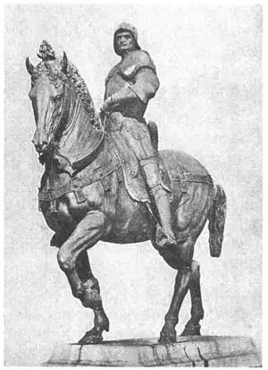

46
NEXT BEST AND BEST
最优秀和第二优秀的骑马雕像

HAVE you ever seen a statue of a famous man sitting in an automobile? No? I haven’t, either. And yet in the days when men used horses to carry them from place to place, many statues of great men were made showing them on horseback.
The reason there are no statues of men in automobiles is that a large man-made article like an automobile is not a suitable subject for sculpture. Very few man-made articles are. A sculptor tries to copy nature. His subjects are things that grow—men, animals, plants, flowers. A good mechanic with a hammer and chisel could carve an automobile in marble, but it takes an artist to model a horse.
You remember the horses and their riders made by Phidias on the Parthenon frieze? They are reliefs. It is much easier to make a horse in relief than in the round, because in the relief the horse is part of the background and does not have to support all its weight on its legs. A statue of a man on horseback is called an equestrian statue. The Romans made better equestrian statues than the Greeks because they knew more about supporting weights. But after the time of the ancient Romans no good equestrian statue was made for a thousand years.
The man who made the first good equestrian statue after all those years was Donatello. It was bigger than life-size and was made of bronze. It took Donatello ten years to make it and set it up in Padua, Italy. It is such a fine statue that many people call it the second best equestrian statue in the world. You can call it that too if you like but what you should really call it is a hard name to pronounce and even harder to spell. The man on the horse was Gattamelata, and so Donatello’s statue is called the Gattamelata. Can you say it? The Gattamelata. Here is a picture of it:
Notice how heavy and strong the horse is. Gattamelata was a soldier and soldiers’ horses in the time of the Renaissance were true warhorses—strong so they could carry the weight of a man in armor, and heavy so they could charge with great force like the heavy half-backs on a football team. I have never seen a real horse with his foot on a ball, and Donatello hadn’t either, but he had to lint the ball there to make the heavy statue steady. See what a well-balanced easy seat in the saddle the rider has.
If the Gattamelata is the second best equestrian statue in the world, what is the best one? Think of all the sculptors who might have made the finest man on horseback. Think of all the hundreds or even thousands of years since sculpture began, and you will be astonished to learn that the best and the next-to-best equestrian statues were both made during the Renaissance; they were both made by goldsmiths; they were both made by men who lived in Florence; they were both statues of soldiers on war-horses, and they were both set up in cities in Italy not very far from Florenee.
The best statue was made by a sculptor known as Verrocchio (Ver-rok’kee-o). Verrocchio was not his real name. It was the name of the man who taught him to be a goldsmith. Strangely enough. Verrocchio in Italian means “true-eye.” Certainly he lived up to his name. The statue is of a soldier who was commander-in-chief of the armies of Venice. His name was Colleoni (Kol-lay-o’nee). Donatello’s Gattamelata, Verrocchio’s Colleoni.
Colleoni was a fine general. He commanded his soldiers well and fought well. He was very strong. He could race with his armor on against the fastest runners in the whole army. He liked to study, he encouraged artists and students at his camp, he was very courteous. He never ate too much or slept too much, and he was noted for his strict honesty.
When Colleoni died, it was found he had left all his fortune to the Republic of Venice on condition that Venice set up a statue of him in the Square of St. Mark. To put a statue there was against the law of Venice, so the Venetians thought they wouldn’t get his fortune, after all. Then they had a bright idea. They remembered a building called the School of St. Mark which had a little square in front of it.
“Why can’t that be called the Square of St. Mark too?” they said. So they had Verrocchio make the statue and put it there, and in this way they got the money left by Colleoni.
Verrocchio balanced the statue so well that no ball had to be put under the uplifted forefoot of his horse. As the statue was on a high pedestal, the sculptor exaggerated Colleoni’s features so they would look right when seen from the ground.
Here is a picture of one of the most glorious pieces of sculpture in the world and the best equestrian statue— Verrocchio’s Colleoni.

No.46-2 COLLEONI（《科莱奥尼骑马像》）
VERROCCHIO（委罗基奥 制）
【中文阅读】
有谁见过某某名人坐在汽车里的雕像吗？没有吧？我们都没见过。但在用马作交通工具的那个时代，雕家们刻过许多伟人骑马的雕像。
现在之所以不把坐车人作为雕刻的对象，是因为像汽车这样的大型人造物不适合做雕刻的对象。雕刻家们很少雕刻人工制品。他们临摹自然，对象总是自然中的生长物，像人、动物、植物、花等。一名优秀的机械工用锤子和凿子能制造一辆汽车，但要雕出一匹马则必须是艺术家才行。
还记得菲迪亚斯在帕台农神庙檐壁上刻的马和骑士浮雕吗？刻浮雕要比刻圆雕简单得多，因为浮雕上的马是背景的一部分，而马腿不需要支撑所有的重量。一个人骑在马背上的雕像叫做“骑马像”。古罗马人比古希腊人更擅长雕刻骑马像，因为古罗马人知道如何支撑重量。但在古罗马之后，已经有一千多年没有出现上乘的骑马雕像了。
千年之后，唐纳泰罗花费了十年时间刻了第一件精美的骑马像。这像比真马要大些，由青铜制成，立在意大利帕杜瓦。因雕像精美，被多人认作世界骑马像第二。如 果愿意，我们都可以这样认为。但这雕像名字绕口难念，拼写更难。骑马人叫加塔梅拉塔，所以雕像就叫《加塔梅拉塔骑马像》。你能读好“加塔梅拉塔”这名字吗？见下面的雕像图：
看看这马多么强壮结实啊。加塔梅拉塔是名士兵。文艺复兴时期，士兵的马是真正的战马。这些马非常强壮，所以能承受士兵全副武装的重量；这些马非常结实，所以能像足球队重量级中锋一样有力。我还从未见过哪匹真马将蹄子踏在一只球上，唐纳泰罗也没见过。但他却不得不将球放在马蹄下来使沉重的雕像保持稳定。看看马鞍上的骑士坐得多稳当呀。
如果《加塔梅拉塔骑马像》只能算作世界第二的话，那么最优秀的雕像是哪座呢？想想所有的雕刻家，看看谁有可能雕出最精致的骑马像。然后，再想想，我们就会惊讶地发现，自有雕刻以来的几百年间，甚至几千年间，世界上最优秀和第二优秀的骑马雕像都在文艺复兴时期，而且都是住在佛罗伦萨的金匠雕刻的。这两座雕像刻画的都是马上骑兵。它们竖立在意大利离佛罗伦萨不远的城市。
最优秀的那座是由一个名叫委罗基奥的雕刻家完成的。其实，委罗基奥并不是他的真名，而是他金工老师的名字。奇怪的是，在意大利语中，“委罗基奥”的意思是“真正的眼睛”。当然，委罗基奥没有辜负他的名字。这座雕像刻画的是威尼斯军中统帅，名叫科莱奥尼。唐纳泰罗雕刻了《加塔梅拉塔骑马像》，而委罗基奥雕刻的是《科莱奥尼骑马像》。
科莱奥尼是位出色的将军。他擅长指挥作战。他很强壮，能身披盔甲跟跑步最快的士兵赛跑；他也喜欢读书，并经常鼓励到他兵营来的艺术家和学生们；他非常谦恭，从不贪吃贪睡；他以严厉、诚实而著称。
据说，科莱奥尼死后将所有的财产捐给了威尼斯共和国，当然前提是威尼斯人在圣马可广场为他修建一座雕像。可是，在广场上竖立雕像是违反威尼斯法律的，但不做又怕得不到科莱奥尼的这笔财富。但后来人们想出了一个好主意。他们想起，在一个叫做圣马可学院的建筑物前有个小广场。
“为什么不能把这个广场叫做圣马可广场呢？”人们说，于是就请委罗基奥来雕像，并安放在这个广场上，这样一来，人们就得到了科莱奥尼的那笔遗产。
委罗基奥的雕像平衡性很好，所以就不用在提起的马蹄下放只球。由于雕像安在一个很高的底座上，所以委罗基奥放大了科莱奥尼的体形，这样站在地上观看，科莱奥尼的比例看上去很协调。
图46-2就是号称世界上最优秀的骑马雕像——委罗基奥的《科莱奥尼骑马像》。